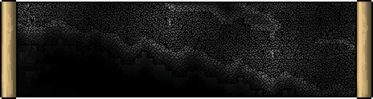

Defiled Caverns
"The creatures you find in the Wastelands are merely the immune system to a whole bigger beast... nobody belongs there."
The Defiled Caverns is a [link biome | | Biomes.html] that is an underground version of the [link surface | | https://terraria.wiki.gg/wiki/Layers#Surface]-level [link Defiled | | Defiled_Wastelands.html], appearing at and below the [link Cavern | | https://terraria.wiki.gg/wiki/Cavern] layer. Just like the surface-based Defiled Wastelands, it is mainly composed of [link Defiled Stone] and [link spreads | | https://terraria.wiki.gg/wiki/Biome_spread] to adjacent tiles. Although some of the underground veins reach deep enough to access it in [link pre-Hardmode | | https://terraria.wiki.gg/wiki/Pre-Hardmode], most of its exclusive contents will only appear when the world enters [link Hardmode | | https://terraria.wiki.gg/wiki/Hardmode]. After the [link Wall of Flesh | | https://terraria.wiki.gg/wiki/Wall_of_Flesh] is defeated for the first time, a diagonal stripe of Defiled is generated, creating additional Defiled Caverns.
The Defiled Caverns do not suppress the spawning of other enemies in the [link underground | | https://terraria.wiki.gg/wiki/Underground] or Cavern layer. During Hardmode, all enemies killed in the Defiled Caverns have a 1/5 (20%) or [link 9/25 (36%) | | https://terraria.wiki.gg/wiki/Expert_Mode | $default | rexpert] chance to drop a [link Soul of Night | | https://terraria.wiki.gg/wiki/Soul_of_Night].
Note: Most characteristics of the Defiled Wastelands also apply to the Defiled Caverns. See the [link Defiled Wastelands] for more extensive information.
Contents
{biomecontent { header:'Characters' items:[ { items:[ ['Pre-Hardmode:', '$default', 'https://terraria.wiki.gg/wiki/Pre-Hardmode'] ['Ancient Defiled Cyclops', '$fromStats'] ['Chunky Slime', '$fromStats'] ['Defiled Cyclops', '$fromStats'] ['Defiled Digger', '$fromStats'] ['Defiled Ekko', '$fromStats'] ['Defiled Mite', '$fromStats'] ['Defiled Phantom', '$fromStats'] ['Defiled Krusher', '$fromStats'] ['Defiled Wisp', '$fromStats'] ['Shattered Goldfish', '$fromStats'] ['Defiled Amalgamation', '$fromStats', '$default', '(boss)'] ['Defiled Swarmer', '$fromStats', '$default', '(summoned by boss)'] ] } { items:[ ['Hardmode:', '$default', 'https://terraria.wiki.gg/wiki/Hardmode'] ['Defiled Asphyxiator', '$fromStats'] ['Defiled Mimic', '$fromStats'] ['Defiled Squid', '$fromStats'] ['Defiled Tripod', '$fromStats'] ['Defiled Watcher', '$fromStats'] ['Profaned Bident', '$fromStats'] ] } { header:'[link Underground Defiled Desert | $default | https://terraria.wiki.gg/wiki/Underground_Desert]:' items:[ ['Shattered Ghoul', '$fromStats'] ] } { header:'[link Defiled Ice biome | $default | https://terraria.wiki.gg/wiki/Ice_biome]:' items:[ ['Defiled Pigron', '$fromStats', 'https://terraria.wiki.gg/wiki/Pigron'] ] } ] } { header:'Unique Drops' items:[ { header:'From [link Defiled Ghoul], [link Defiled Squid] and [link Defiled Tripod]:' class:'miniheader inlineblock' items:[ ['Black Bile', '$fromStats'] ] } { header:'From [link Defiled Ekko] (in Hardmode) and [link Profaned Bident]:' class:'miniheader inlineblock' items:[ ['Meat Grinder', '$default', 'https://terraria.wiki.gg/wiki/Meat_Grinder'] ] } { header:'From [link Defiled Tripod]:' class:'miniheader inlineblock' items:[ ['Tripod Nip', '$fromStats'] ['Vitamins', '$default', 'https://terraria.wiki.gg/wiki/Vitamins'] ] } { header:'From [link Defiled Pigron | | https://terraria.wiki.gg/wiki/Pigron]:' class:'miniheader inlineblock' items:[ ['Bacon', '$default', 'https://terraria.wiki.gg/wiki/Bacon'] ['Ham Bat', '$default', 'https://terraria.wiki.gg/wiki/Ham_Bat'] ['Pigron Kite', '$default', 'https://terraria.wiki.gg/wiki/Kites#Pigron_Kite', '(on [link Windy Days | | https://terraria.wiki.gg/wiki/Windy_Day])'] ['Pigron Minecart', '$default', 'https://terraria.wiki.gg/wiki/Minecarts#Pigron_Minecart'] ] } { header:'From [link Defiled Mimic]:' class:'miniheader inlineblock' items:[ ['Communion', '$fromStats'] ['Incision', '$fromStats'] ['Ziptie', '$fromStats'] ['Ravel', '$fromStats'] ['Chunky Hook', '$fromStats'] ['Greater Healing Potion', '$default', 'https://terraria.wiki.gg/wiki/Greater_Healing_Potion'] ['Greater Mana Potion', '$default', 'https://terraria.wiki.gg/wiki/Greater_Mana_Potion'] ] } { header:'From [link Profaned Bident]:' class:'miniheader inlineblock' items:[ ['Nazar', '$default', 'https://terraria.wiki.gg/wiki/Nazar'] ] } { header:'From [link Ancient Defiled Cyclops], [link Defiled Cyclops], [link Defiled Digger], [link Defiled Ekko], [link Defiled Phantom], [link Defiled Krusher], [link Defiled Squid] and [link Defiled Tripod]:' class:'miniheader inlineblock' items:[ ['Strange String', '$fromStats'] ] } { header:'From [link Ancient Defiled Cyclops], [link Defiled Cyclops], [link Defiled Digger], [link Defiled Phantom] and [link Defiled Krusher]:' class:'miniheader inlineblock' items:[ ['Ancient Defiled Helmet', '§ModImage§/Items/Armor/Defiled/Defiled2_Helmet.png', 'Ancient_Defiled_Armor.html'] ['Ancient Defiled Breastplate', '§ModImage§/Items/Armor/Defiled/Defiled2_Breastplate.png', 'Ancient_Defiled_Armor.html'] ['Ancient Defiled Greaves', '§ModImage§/Items/Armor/Defiled/Defiled2_Greaves.png', 'Ancient_Defiled_Armor.html'] ] } { header:'From [link Ancient Defiled Cyclops]:' class:'miniheader inlineblock' items:[ ['Ancient Kruncher', '$fromStats'] ] } { header:'From [link Chunky Slime]:' class:'miniheader inlineblock' items:[ ['Gel', '$default', 'https://terraria.wiki.gg/wiki/Gel'] ] } { header:'From [link Defiled Cyclops]:' class:'miniheader inlineblock' items:[ ['Bone Latcher', '$fromStats'] ] } { header:'From [link Defiled Phantom]:' class:'miniheader inlineblock' items:[ ['Krunch Mix', '$fromStats'] ] } { header:'From [link Defiled Krusher]:' class:'miniheader inlineblock' items:[ ['Bombardment', '$fromStats'] ] } { header:'From [link Defiled Wisp]:' class:'miniheader inlineblock' items:[ ['Defiled Spirit', '$fromStats'] ] } { header:'From any [link enemy | | Enemies.html]:' class:'miniheader inlineblock' items:[ ['Defiled Key', '$fromStats', 'Biome_Keys.html', '(from any enemy, 1/2500 chance)'] ['Soul of Night', '$default', 'https://terraria.wiki.gg/wiki/Soul_of_Night', '(1/5, [link 9/25 | | https://terraria.wiki.gg/wiki/Expert_Mode | $default | rexpert])'] ] } { header:'From [link Defiled Amalgamation]:' class:'miniheader' items:[ ['Lost Ore', '$fromStats'] ['Undead Chunk', '$fromStats'] ['Low Signal', '$fromStats'] ['Return To Sender', '$fromStats'] ['Defiled Amalgamation Mask', '$fromStats'] ['Defiled Amalgamation Trophy', '$fromStats'] ['Treasure Bag', '§ModImage§/Items/Other/LootBags/Defiled_Amalgamation_Bag.png', 'Treasure_Bag.html', 'in [link Expert Mode | | https://terraria.wiki.gg/wiki/Expert_Mode]'] ['Refactoring Pieces', '$fromStats', '$default', '(from treasure bag)'] ['Defiled Amalgamation Relic', '§ModImage§/Tiles/BossDrops/Defiled_Amalgamation_Relic_Item.png', '$default', 'in [link Master Mode | | https://terraria.wiki.gg/wiki/Master_Mode]'] ['Mysterious Spray', '$fromStats', '$default', 'in [link Master Mode | | https://terraria.wiki.gg/wiki/Master_Mode]'] ['Blockus Tube', '$fromStats', '$default', 'in [link Master Mode | | https://terraria.wiki.gg/wiki/Master_Mode]'] ] } { header:'From [link vegetation | | https://terraria.wiki.gg/wiki/Plants]:' class:'miniheader' items:[ ['Wilting Rose', '§ModImage§/Tiles/Defiled/Wilting_Rose_Item.png'] ] } { header:'From terrain:' class:'miniheader' items:[ ['Defiled Stone', '§ModImage§/Tiles/Defiled/Defiled_Stone_Item.png'] ['Defiled Sand', '§ModImage§/Tiles/Defiled/Defiled_Sand_Item.png', '$default', '([link Underground Defiled Desert | | https://terraria.wiki.gg/wiki/Underground_Desert])'] ['Hardened Defiled Sand', '§ModImage§/Tiles/Defiled/Hardened_Defiled_Sand_Item.png', '$default', '([link Underground Defiled Desert | | https://terraria.wiki.gg/wiki/Underground_Desert])'] ['Defiled Sandstone', '§ModImage§/Tiles/Defiled/Defiled_Sandstone_Item.png', '$default', '([link Underground Defiled Desert | | https://terraria.wiki.gg/wiki/Underground_Desert])'] ['Gray Ice Block', '§ModImage§/Tiles/Defiled/Defiled_Ice_Item.png', '$default', '([link Defiled Ice biome | | https://terraria.wiki.gg/wiki/Ice_biome])'] { items:[ ['Defiled Fissure:'] ['The Kruncher', '$fromStats'] ['Musket Ball', '$default', 'https://terraria.wiki.gg/wiki/Musket_Ball', '(dropped with The Kruncher)'] ['Dim Starlight', '$fromStats'] ['Infusion', '$fromStats'] ['Krakram', '$fromStats'] ['Suspicious Looking Pebble', '$fromStats'] ] } ] } { header:'From [link fishing | | https://terraria.wiki.gg/wiki/Fishing]:' class:'miniheader' items:[ ['Bilemouth', '$fromStats'] ['Manasynk', '$fromStats'] ['Knee Slapper', '$fromStats', '$default', '([link Hardmode | | https://terraria.wiki.gg/wiki/Hardmode] only)'] ['Chunky Crate', '$fromStats', '$default', '([link Pre-Hardmode | | https://terraria.wiki.gg/wiki/Pre-Hardmode] only)'] ['Bilious Crate', '$fromStats', '$default', '([link Hardmode | | https://terraria.wiki.gg/wiki/Hardmode] only)'] ] } { header:'From [link Angler Quests | | https://terraria.wiki.gg/wiki/Angler#Quest_list]:' class:'miniheader' items:[ ['Prikish', '$fromStats'] ] } ] } { header:'Music' items:[ ['Music Box (Defiled Caverns)', '§ModImage§/Tiles/MusicBoxes/Music_Box_DC_Item.png', 'Music_Boxes.html'] ] } biomecontent}Lore